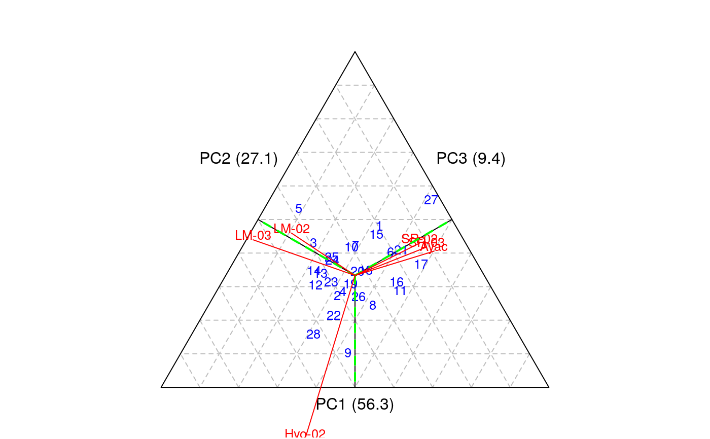
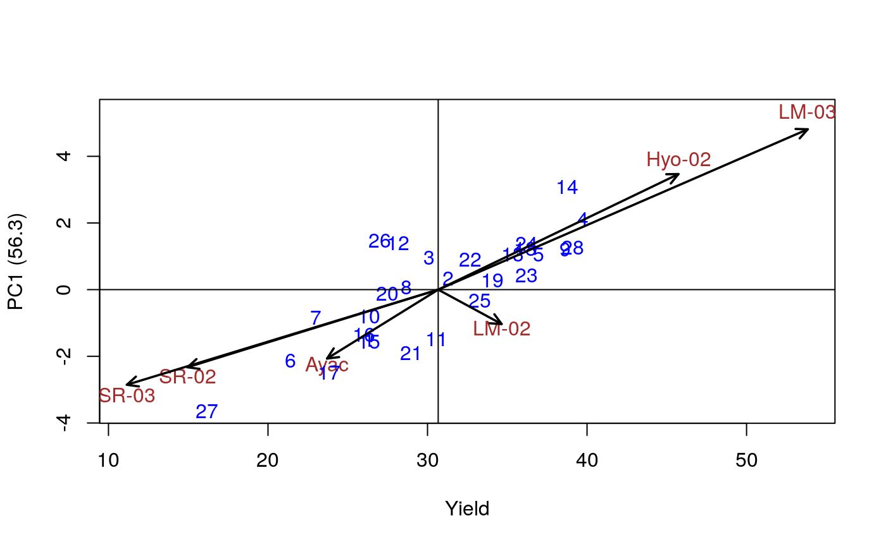
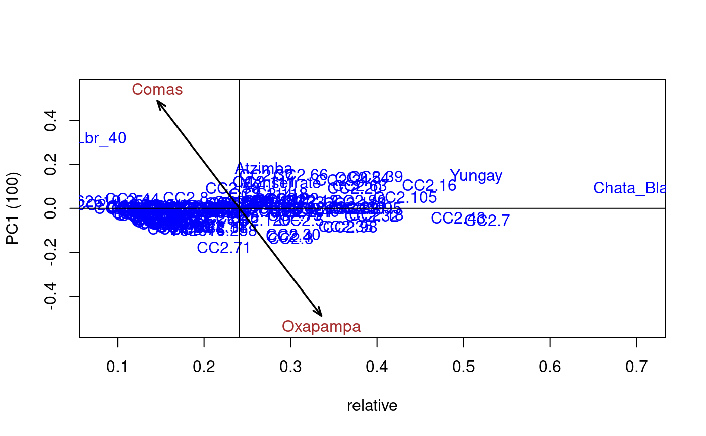
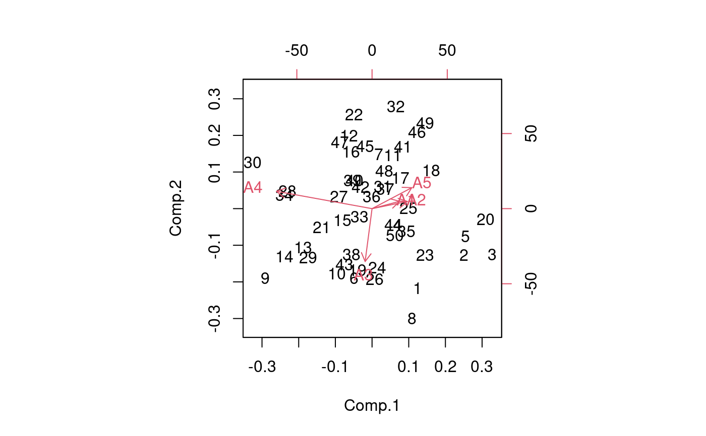

AMMI Analysis
AMMI.RdAdditive Main Effects and Multiplicative Interaction Models (AMMI) are widely used to analyze main effects and genotype by environment (GEN, ENV) interactions in multilocation variety trials. Furthermore, this function generates data to biplot, triplot graphs and analysis.
AMMI(ENV, GEN, REP, Y, MSE = 0, console = FALSE, PC = FALSE) # S3 method for default AMMI(ENV, GEN, REP, Y, MSE = 0, console = FALSE, PC = FALSE)
Arguments
| ENV | Environment |
|---|---|
| GEN | Genotype |
| REP | Replication |
| Y | Response |
| MSE | Mean Square Error |
| console | ouput TRUE or FALSE |
| PC | Principal components ouput TRUE or FALSE |
Value
ANOVA analysis of variance general
genXenv class by, genopyte and environment
analysis analysis of variance principal components
means average genotype and environment
biplot data to produce graphics
PC class princomp
Details
additional graphics see help(plot.AMMI).
Examples
# Full replications library(agricolae) # Example 1 data(plrv) model<- with(plrv,AMMI(Locality, Genotype, Rep, Yield, console=FALSE)) model$ANOVA#> Analysis of Variance Table #> #> Response: Y #> Df Sum Sq Mean Sq F value Pr(>F) #> ENV 5 122284 24456.9 257.0382 9.08e-12 *** #> REP(ENV) 12 1142 95.1 2.5694 0.002889 ** #> GEN 27 17533 649.4 17.5359 < 2.2e-16 *** #> ENV:GEN 135 23762 176.0 4.7531 < 2.2e-16 *** #> Residuals 324 11998 37.0 #> --- #> Signif. codes: 0 ‘***’ 0.001 ‘**’ 0.01 ‘*’ 0.05 ‘.’ 0.1 ‘ ’ 1# Example 2 data(CIC) data1<-CIC$comas[,c(1,6,7,17,18)] data2<-CIC$oxapampa[,c(1,6,7,19,20)] cic <- rbind(data1,data2) model<-with(cic,AMMI(Locality, Genotype, Rep, relative))#> #> Warning. The analysis AMMI is not possible. #> The number of environments and number of genotypes must be greater than 2model$ANOVA#> Analysis of Variance Table #> #> Response: Y #> Df Sum Sq Mean Sq F value Pr(>F) #> ENV 1 6.1839 6.1839 184.8518 0.0001694 *** #> REP(ENV) 4 0.1338 0.0335 8.4703 1.293e-06 *** #> GEN 126 9.6729 0.0768 19.4377 < 2.2e-16 *** #> ENV:GEN 108 1.3479 0.0125 3.1601 < 2.2e-16 *** #> Residuals 492 1.9432 0.0039 #> --- #> Signif. codes: 0 ‘***’ 0.001 ‘**’ 0.01 ‘*’ 0.05 ‘.’ 0.1 ‘ ’ 1# Example 3 # Only means. Mean square error is well-known. data(sinRepAmmi) REP <- 3 MSerror <- 93.24224 #startgraph model<-with(sinRepAmmi,AMMI(ENV, GEN, REP, YLD, MSerror,PC=TRUE)) # print anova print(model$ANOVA,na.print = "")#> Df Sum Sq Mean Sq F value Pr(>F) #> ENV 4 728766.51 182191.62761 #> REP(ENV) 10 #> GEN 49 23488.96 479.36643 5.141087 0.000000e+00 #> ENV:GEN 196 40728.33 207.79760 2.228578 9.998669e-13 #> Residuals 490 45688.70 93.24224# with principal components model$PC is class "princomp" pc<- model$PC pc$loadings#> #> Loadings: #> Comp.1 Comp.2 Comp.3 Comp.4 Comp.5 #> A1 0.243 0.122 0.811 0.262 0.447 #> A2 0.312 0.120 -0.824 0.447 #> A3 -0.876 -0.131 0.107 0.447 #> A4 -0.846 0.287 0.447 #> A5 0.352 0.348 -0.563 0.489 0.447 #> #> Comp.1 Comp.2 Comp.3 Comp.4 Comp.5 #> SS loadings 1.0 1.0 1.0 1.0 1.0 #> Proportion Var 0.2 0.2 0.2 0.2 0.2 #> Cumulative Var 0.2 0.4 0.6 0.8 1.0summary(pc)#> Importance of components: #> Comp.1 Comp.2 Comp.3 Comp.4 Comp.5 #> Standard deviation 13.2655703 7.1030079 6.0540524 2.90561020 1.833059e-08 #> Proportion of Variance 0.6481067 0.1858144 0.1349855 0.03109348 1.237507e-18 #> Cumulative Proportion 0.6481067 0.8339211 0.9689065 1.00000000 1.000000e+00biplot(pc)# Principal components by means of the covariance similar AMMI # It is to compare results with AMMI cova<-cov(model$genXenv) values<-eigen(cova) total<-sum(values$values) round(values$values*100/total,2)#> [1] 64.81 18.58 13.50 3.11 0.00# AMMI: 64.81 18.58 13.50 3.11 0.00